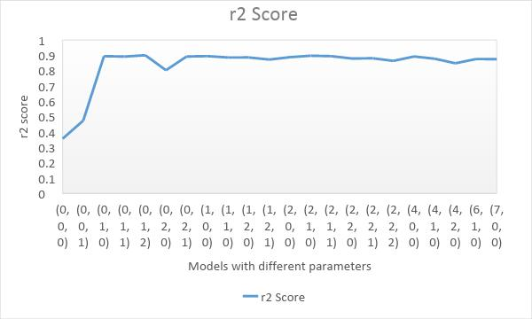
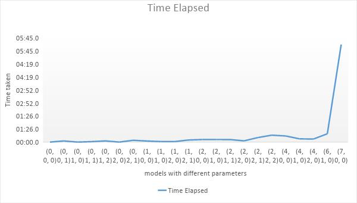
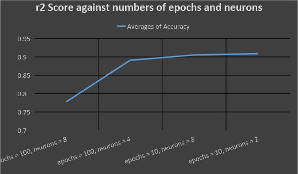
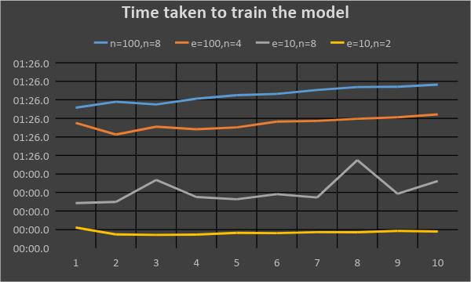

We’ve implemented Prediction model with ARIMA and tuned it with different parameters to achieve better accuracy than RNN. Several experiments were conducted to select the most appropriate ARIMA model for further comparison with RNN.
Prediction Module - ARIMA - Results


Prediction Module - Using RNN with LSTM
Objective of implementing prediction model with RNN is to make predictions with better accuracy than the ARIMA model.
We’ve used RNN with LSTM to implement the model and several experiments were conducted to select best RNN model and compare it with ARIMA model.
Prediction Module - Using RNN with LSTM-Results


Optimizing Module - Genatic
IDH hospital currently uses a non-optimal nurse allocation platform where nurses are allocated to different wards inefficiently and randomly and the schedules were generated in a slower rate. Research area includes to generate schedules efficiently and faster compared to the ILS approach using real data sets. Following are the goals achieved by resolving the issues faced by the hospital related to optimization
Generate optimal working schedules for nurses
Suggest leave plans for nurses according to the existing number of patients and the predicted
patient count for a particular period of time.
Generate a report which provides the minimum number of nurses that should be available for a
particular period of time.
Optimizing Module - Genatc -Results
Optimizing Module - Iterative
Algorithm
Instead of generating nurses schedules manually, “Smart Scheduler” is able to automate the
generating of nurses schedules by considering the factors; Total number of nurses in the hospital,
Total number of patients in the hospital, Future Patient count in a ward and whether nurse is an
OT or a normal shift nurse. Other benefits achieved from “Smart Scheduler”;